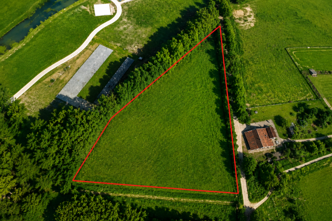
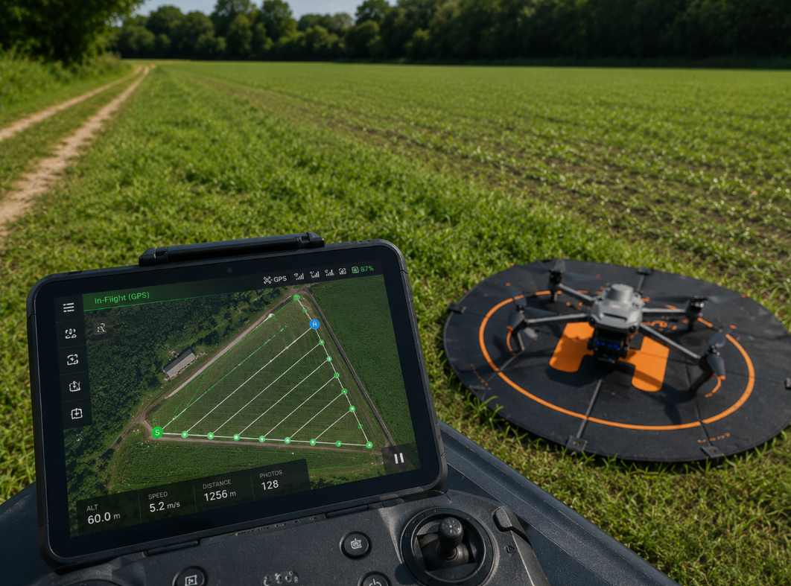
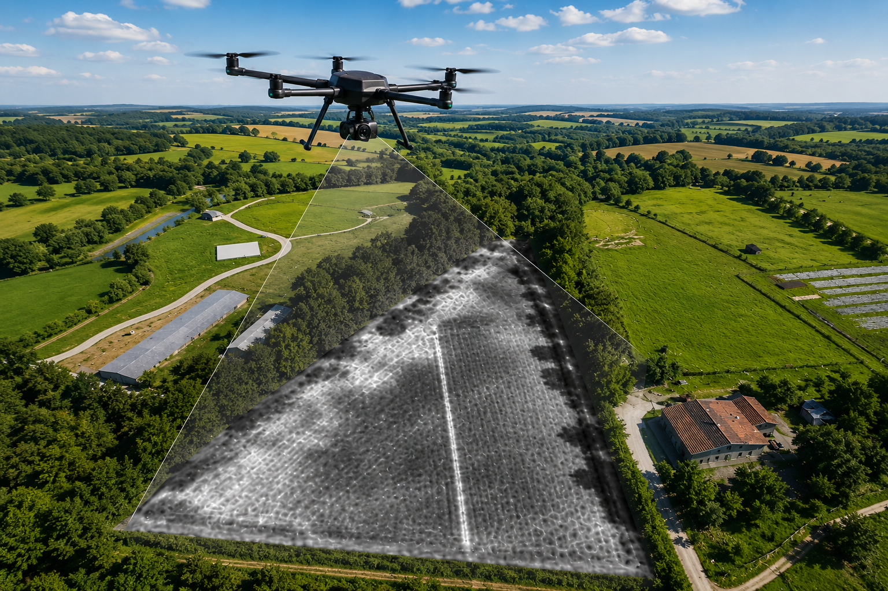
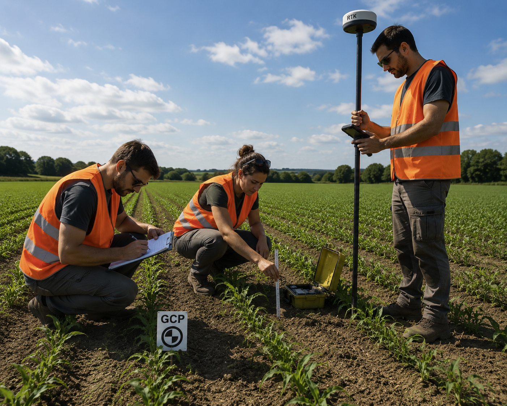

Study Area
The study was carried out on an experimental wheat field. Before each survey, the Area of Interest (AOI) was defined and flight permissions and environmental conditions were checked.

UAV Platform
Data were collected using a UAV equipped with multispectral and thermal sensors. Flight altitude, overlap and speed were optimized to guarantee complete field coverage.

Multispectral Acquisition
Five spectral bands were acquired simultaneously to describe crop reflectance and vegetation status under different wavelengths.

Thermal Survey
Thermal imagery was collected during the same flight to identify canopy temperature variations related to water stress.

Ground Measurements
Field observations and reference measurements were collected to validate remotely sensed information and support the interpretation of crop stress.
Collected Dataset
The final dataset includes RGB, multispectral and thermal imagery together with field observations that are processed during the analysis phase.